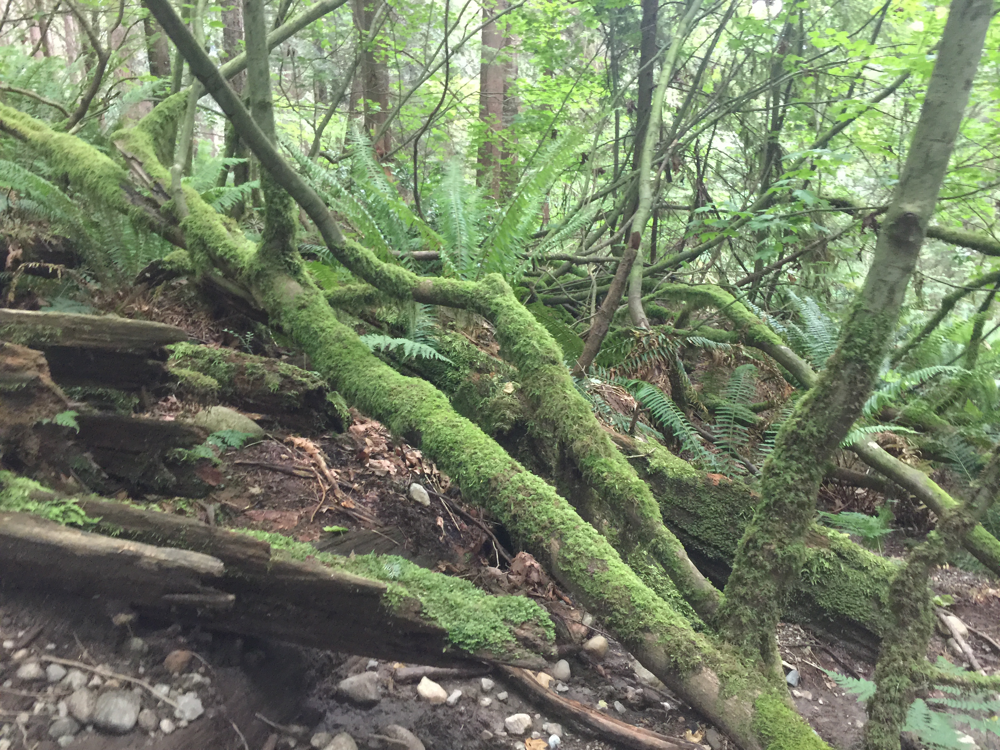
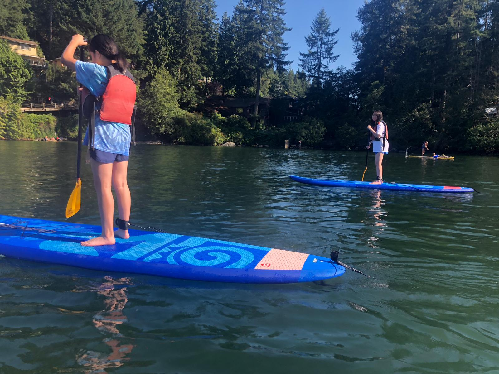

My Passport Tales
A page covering the different places I've traveled to over the years. All photos below were taken by me.
Vancouver, British Columbia
North Vancouver
North Vancouver has many scenic areas for hiking, and the Deep Cove area (pictured above) has a hiking trail that overlooks the lake.
The Deep Cove also offers paddleboard and kayak rentals.


Caption: During my visit, my sister (left) and I (right) went paddleboarding there in the summer. The water is cool and refreshing in the summer, and is the perfect season to go paddleboarding.
Stanley Park

Stanley Park is a large urban park in Vancouver with many walking and biking trails, as well as scenic views of the city and waterfront.
Travel Tips
- Try some fresh seafood while you're here, Vancouver is well-known for its dock-to-dish seafood like oysters and salmon.
- Plan ahead for famous tourist spots like Grouse Mountain and Capilano Suspension Bridge, tickets sell fast.
- Take the train for a day trip to Coquitlam for some more scenic views of nature, and stop by for some delicious Korean food in K-Town.
- Be sure to book a place to stay in Downtown Vancouver, since public transportation is very reliable. Nightlife downtown is also brimming with bars and late-night activities.
Visit TripAdvisor for more information on visiting Vancouver, BC.